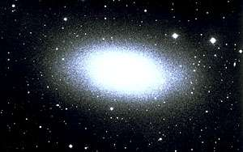
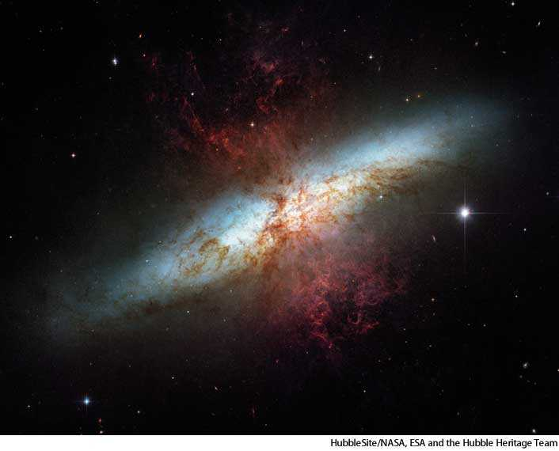
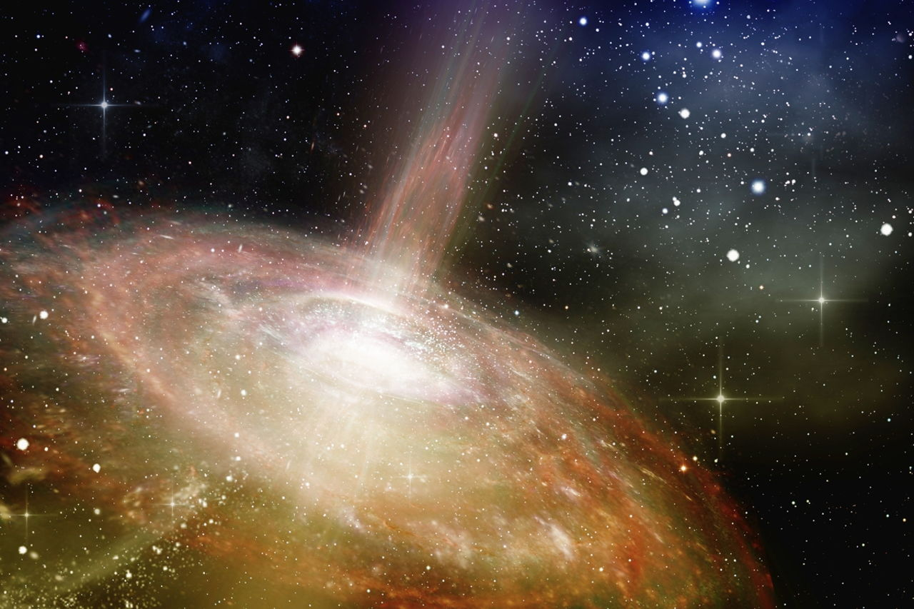

ASTRO PROJECT
ADVAITH NAIR
period 5
Here you will learn about different parts of the galaxy. Such as the Galaxies and the life cycle of a star also black holes.
Here you will learn about different parts of the galaxy. Such as the Galaxies and the life cycle of a star also black holes.
Spiral galaxies are a flat spinning disk of stars. The middle is made up of olders stars that are dim. It is thought that the middle of spiral galaxies is a super massive black hole. As spiral galaxies get older they turn into elliptical galaxies. The largest known galaxy is called NGC 6872. It is said to be 5 times the size of the milky way

Barred Spiral Galaxies are similar to Spiral Galaxies. They both have the same traits but the Barred Spiral Galaxy is stretched out more than the Spiral Galaxy. One example of a Barred Spiral Galaxy is the Milky Way.

An elliptical galaxy is a type of galaxy with a smooth, nearly featureless galaxy. They are the most common galaxy in the universe. They are not as noticeable because they are older and dimmer.
Irregular galaxies have no particular shape. They are among the smallest galaxies and are full of gas and dust. Having a lot of gas and dust means that these galaxies have a lot of star formation going on within them. This can make them very bright. When images are processed from the Hubble Space telescope scientists could not find a center or a point of orbit for the galaxy.
A nebula is a giant cloud of dust and gas in space. Some nebulae (multiple nebulas) come from the gas and dust thrown out by the explosion of a dying star, such as a supernova. Other nebulae are regions where new stars are beginning to form. Gravity will slowly clump the dust togerther forming a beautiful sight.

A protostar is the formation of gas before the star is made. A protostar looks like a star but it isn't, this is becasue the star is not hot enough to fuse together. When the protostar is forming the gas forms like a disc and this cloud of gas collapses into the protostar. Since the star has a magnetic field some particles will fly out of the area.
White Dwarf are the endings of stars like our sun. They will lose all their nuculer energy and will only be left with a core. The size of the star will be smaller and the volume changes draticlly. The volume can get close to the volume of earth. Black Holes are sometimes formed when the star collapseson itself. This leaves alot of mass to be focused in one area. A black hole will "drain" the matter out of nearby planets and stars. These happen to stars with a higher mass Neutron Stars have a similar cycle to black holes. Neutons stars are just lighter, since the star has a lower mass it cannot collapse alot of mass on itself. When the star collapses on itself. The star will shrink to the size of a city. This is the most dense phyical object known to man.